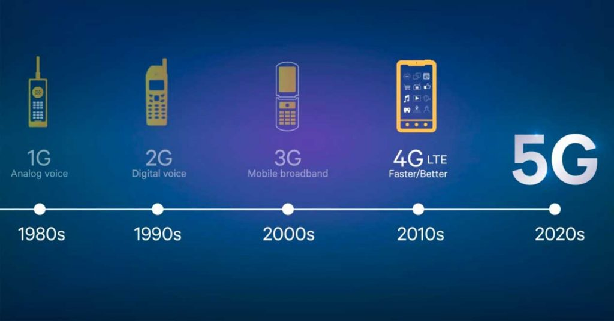

El servicio 5G ya está disponible en algunas áreas en varios países. Estos servicios 5G de la primera generación se llaman 5G no autónomos (5G NSA). Esta tecnología es una radio 5G que parte de la infraestructura de red 4G LTE existente. 5G NSA será más rápida que 4G LTE. Pero la tecnología 5G de alta velocidad y baja latencia en la que se ha enfocado la industria es 5G independiente (5G SA). Debería comenzar a estar disponible para el año 2020 y alcanzar la disponibilidad máxima para el 2022.
